怎么用：先看每句的「谱」——八个字就是八个动作的骨架。念着谱听老师那段原视频，数到第几拍，就看这一拍对应的那一格。
一句跳顺了再跳下一句。拍号是我按老师数拍对出来的，你听着数，如果哪一拍对不上，以你听到的为准。
八句大纲
| 句 | 时间 | 这一句在干什么 |
|---|
| 一 | 0–9s | 开手起势，上托，转成弓步推掌 |
| 二 | 10–18s | 换边重复，收在提膝托掌 |
| 三 | 20–28s | 亮相、俯身下压、起身接后抬腿 |
| 四 | 29–37s | 探海、云手、仰身，全是转折 |
| 五 | 38–47s | 上举、前推，往中间走位 |
| 六 | 48–56s | 后腿、提膝、平开，边走边转 |
| 七 | 57–66s | 后仰开手，收合走位 |
| 八 | 67–75s | 合抱推掌，走上交叉步接后腿 |
| 尾 | 76–79s | 后腿控制，定格，收势 |
逐拍分解
第一句
开手 · 上托 · 推掌 · 收手
1–9s
谱起开沉托抱推斜收
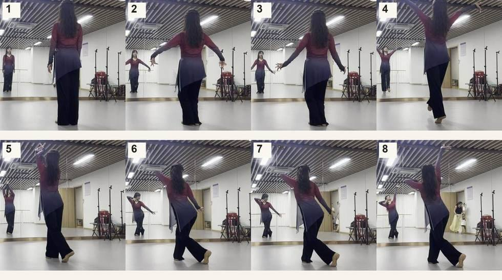
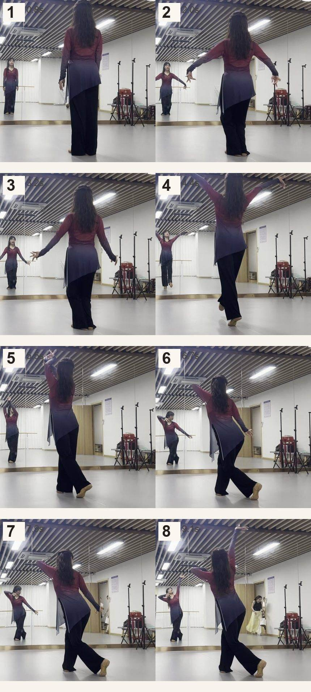
- 1
起势站定双手垂在体侧，重心在左腿
0.8s - 2
开手成山膀双臂向两侧平开，手心向下
2.0s - 3
沉手左转手往下沉，身体往左带
3.2s - 4
双托上举双手托到头顶，脚跟立起
4.4s - 5
头顶合抱两手在头上合住，转向右
5.5s - 6
弓步推掌前腿屈成弓步，一手向前推
6.7s - 7
斜线前压双臂拉成斜线，身体压下去
7.9s - 8
收手点地双手收回，脚尖点地转回左前
9.1s
第二句
斜线 · 平开 · 上举 · 提膝
10–18s
谱垂错斜平举收提分
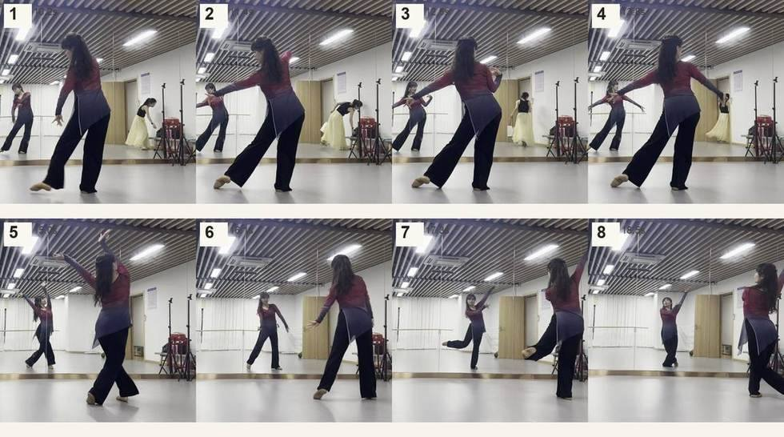
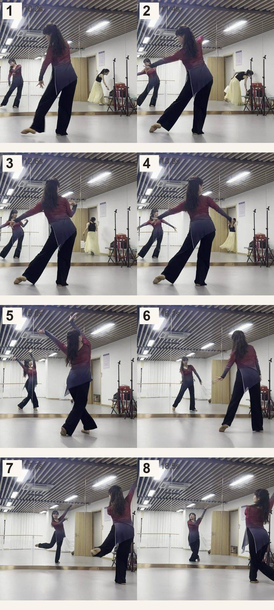
- 1
垂手左转手臂放下，身体左转
10.2s - 2
一前一后两臂前后错开，一上一下
11.4s - 3
斜线弓步弓步加深，双臂拉成斜线
12.6s - 4
侧平打开双臂平开到肩高
13.8s - 5
双臂上举双手举过头顶，两腿分开
15.0s - 6
收手换重心手收回体侧，重心换到单腿
16.1s - 7
提膝双托一膝提到腰高，双手头上合抱
17.3s - 8
分腿侧转另一条腿抬起，身体侧转
18.5s
第三句
亮相 · 俯身 · 起身 · 后抬
20–28s
谱亮抱倾压起斜平后
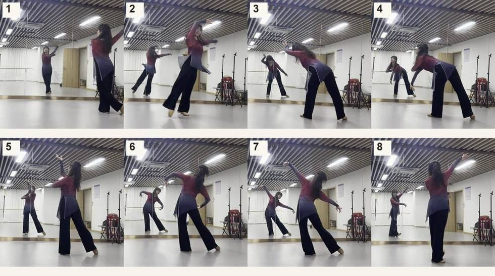
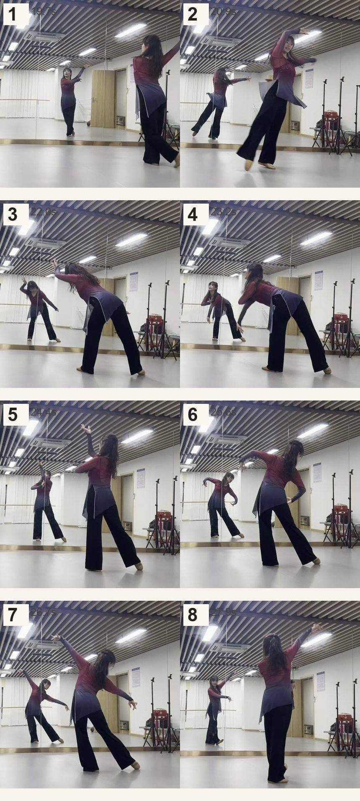
- 1
单臂亮相一臂上举、一臂前伸，亮住
19.7s - 2
头上合抱双手在头顶合，脚尖前点
20.9s - 3
前倾下探上身向前倾，双手往前下伸
22.0s - 4
俯身压掌继续压下去，手到膝前
23.2s - 5
起身亮相直起来，一臂上举
24.4s - 6
斜线倾身双臂一上一下，身体侧倾
25.6s - 7
侧平前倾双臂平开，上身仍然前倾
26.7s - 8
后抬转身后腿抬起，身体转过去
27.9s
第四句
探海 · 云手 · 开手 · 仰身
29–37s
谱探高斜抱伸仰云开
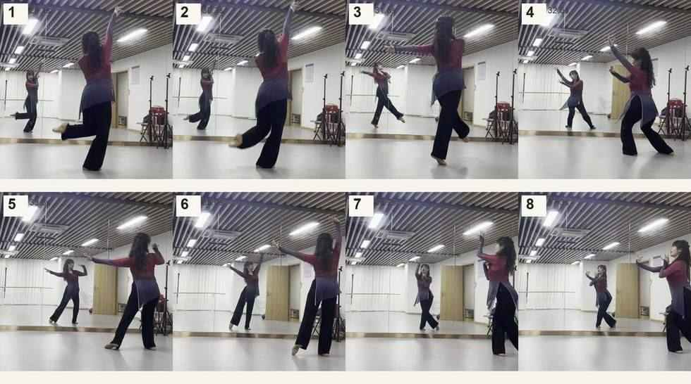
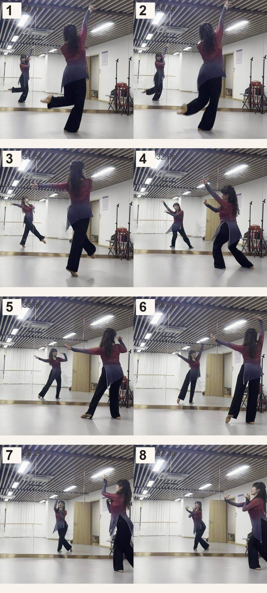
- 1
后腿探海后腿伸直向后抬，一手上举
29.1s - 2
后腿双托后腿抬更高，双手上举
30.3s - 3
大斜线转双臂拉成大斜线，身体转右
31.5s - 4
云手抱弓双手划圆抱回，落成弓步
32.6s - 5
开手前伸一手前伸、一手后拉
33.8s - 6
上举后仰双手上举，上身微微后仰
35.0s - 7
云手右抱双手在右上方抱圆
36.2s - 8
开手左前双臂打开，身体朝左前
37.3s
第五句
上举 · 前推 · 走中 · 交叉
39–47s
谱举抱推合推收平叉
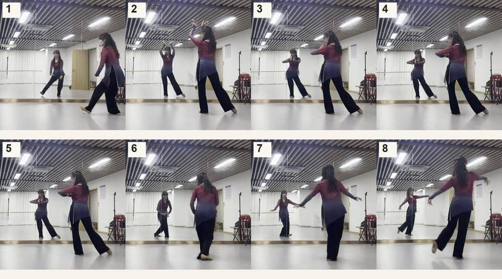
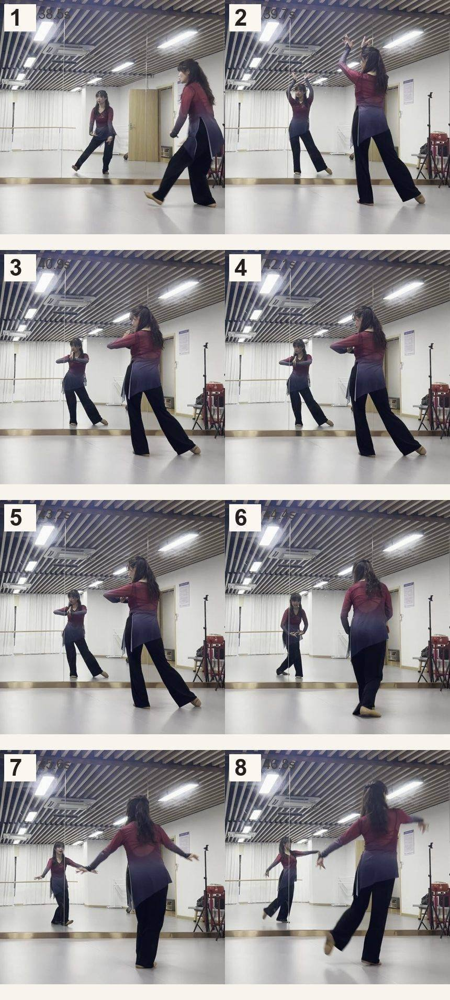
- 1
上举点地双臂上举，脚尖前点
38.5s - 2
合抱转右双手合抱上举，转向右
39.7s - 3
云手前推双手划圆之后向前推
40.9s - 4
合手转右双手收到身前，转向右
42.1s - 5
推掌朝左双手前推，身体朝左
43.2s - 6
收手走中手收回，往中间走位
44.4s - 7
侧平打开双臂平开，正对镜子
45.6s - 8
开手交叉手打开，脚下走交叉步
46.8s
第六句
后腿 · 提膝 · 平开 · 转身
48–56s
谱后立平提弓错走转
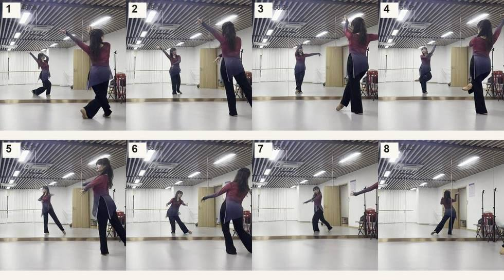
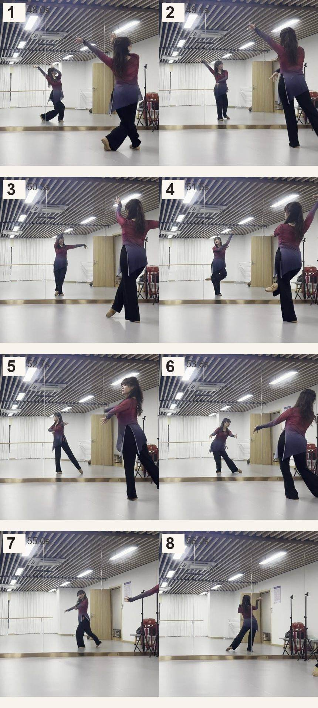
- 1
后腿屈膝后腿屈膝抬起，身体前倾
48.0s - 2
上举立起双手上举，身体直起来
49.1s - 3
侧平转右双臂平开，身体转向右
50.3s - 4
提膝上托提膝，一只手向上托
51.5s - 5
开手弓步双臂一前一后打开，弓步
52.7s - 6
一上一下一臂上举、一臂下垂
53.8s - 7
平开走位双臂平开，脚下走动
55.0s - 8
上举转身一臂上举，身体转过去
56.2s
第七句
后仰 · 合抱 · 收合 · 前伸
57–66s
谱仰举抱开收伸举弓
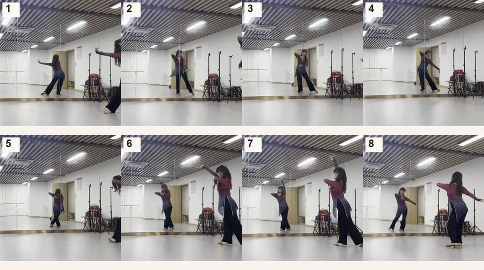
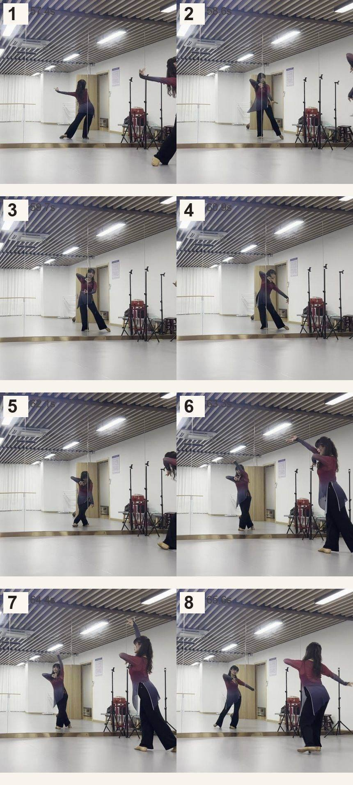
- 1
后仰开手双臂打开，上身向后仰、仰头
57.4s - 2
上举转右一臂上举，转向右
58.6s - 3
合抱转身双手在身前合抱，转回来
59.7s - 4
开手朝左双臂打开，身体朝左
60.9s - 5
收合走位双手收合，脚下走位
62.1s - 6
前伸点地一手前伸，脚尖点地
63.3s - 7
上举转右一臂上举，转向右
64.4s - 8
开手弓步双臂打开落成弓步
65.6s
第八句
合抱 · 推掌 · 侧平 · 定格
67–75s
谱抱伸推平转蹲叉后
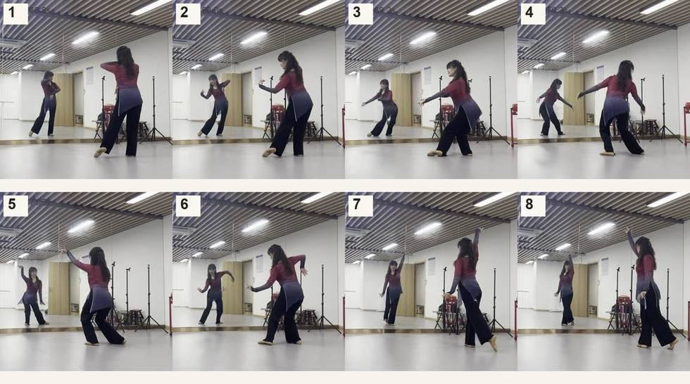
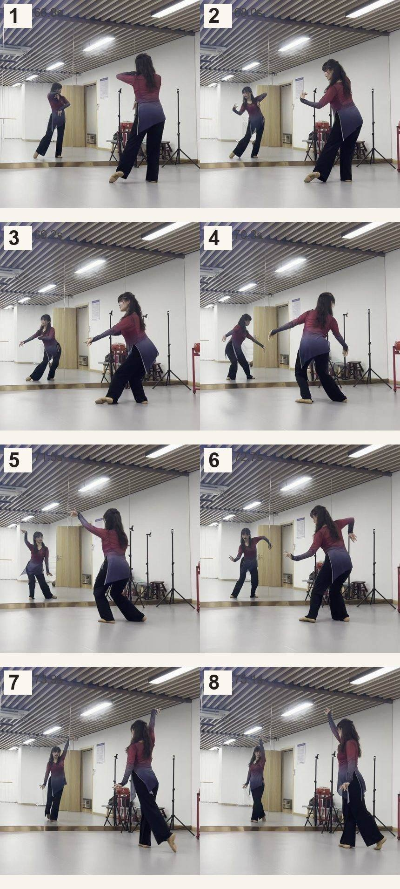
- 1
合抱转身双手在胸前合抱，身体转
66.8s - 2
前伸弓步双手向前伸，弓步
68.0s - 3
推掌前倾双手推出，上身前倾
69.2s - 4
侧平打开双臂平开，弓步
70.3s - 5
上举转身一臂上举，身体转
71.5s - 6
一前一后蹲双臂前后错开，半蹲下去
72.7s - 7
上举交叉一臂上举，双脚交叉
73.9s - 8
上举后腿一臂上举，后腿抬起
75.1s
尾声控制 · 定格 · 收势76–79s
- 1
后腿控制后腿保持高度，立腿绷直，身体稳住
76.2s
- 2
定格定住三秒不晃，眼神给出去
77.4s
- 3
收势手放下，走开
78.6s
按这个顺序练
- 一句一句来一次只练一句，八拍跳顺了再下一句。八句一起记一定会乱。
- 先记「谱」，再做动作把八个字背下来（起开沉托抱推斜收），比记画面快得多。
- 对着原视频跳数到第几拍就走第几个动作。哪一拍跟不上，就把那一拍单独做三遍。
- 两句一接第一句接第二句、第二句接第三句……接缝单独练，比整段重跳有用。
- 复盘只看卡住的那拍别从头看视频，直接拖到时间点，看两秒就够。
没有视频也能照着练
这页只带图，视频没放上来（太大）。用的时候：
① 把老师数拍的原视频放在一边，音量开大，跟着数；
② 数到第几拍，瞄一眼这页对应的那一格，确认脚、重心、手；
③ 一句（8 拍）跳顺了再往下走一句，别整段重来。
需要分句循环版、慢速版视频，私下找我要。